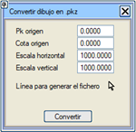

Bu menü, Araçlar > Yardımcı Araçlar > Çizimi .pkz dosyasına dönüştür açılır menüsünde yer almaktadır.
Bu araç, aşağıdaki bilgilerin girilmesi gereken bir iletişim kutusu gösterir:
- Başlangıç Kilometresi (Pk origen)
- Başlangıç Kotu (Cota origen)
- Yatay Ölçek (Escala horizontal)
- Düşey Ölçek (Escala vertical)
Yukarıdaki alanlar doldurulduktan sonra, çizimden bir çizgi şu şekilde seçilir:
- Dosyayı oluşturmak için kullanılacak çizgi
ve son olarak .pkz dosyasını oluşturmak için "Dönüştür" butonuna tıklanır.

|